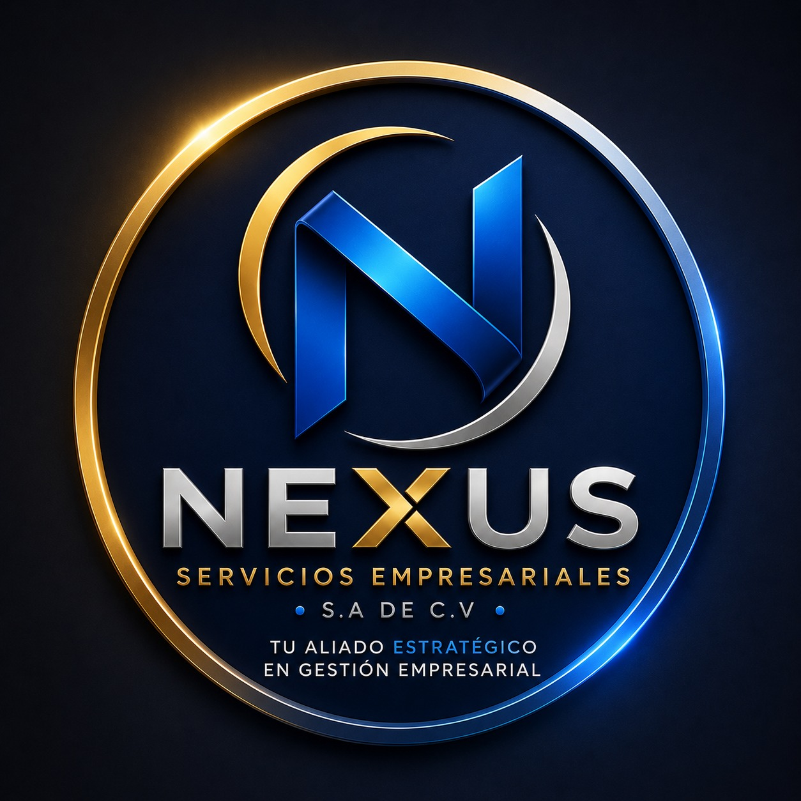

Aporte económico obligatorio realizado por trabajadores y empleadores para financiar el Sistema de Ahorro para Pensiones y garantizar beneficios futuros de jubilación.

Nexus Servicios Empresariales S.A. de C.V.
Tu aliado estratégico en gestión empresarial
Seleccione un término para consultar su definición y escuchar su explicación en audio.
Aporte económico obligatorio realizado por trabajadores y empleadores para financiar el Sistema de Ahorro para Pensiones y garantizar beneficios futuros de jubilación.
Proceso mediante el cual un empleador registra oficialmente su empresa ante instituciones correspondientes.
Persona natural o jurídica que contrata trabajadores a cambio de remuneración.
Sistema previsional destinado a administrar fondos de ahorro para el retiro.